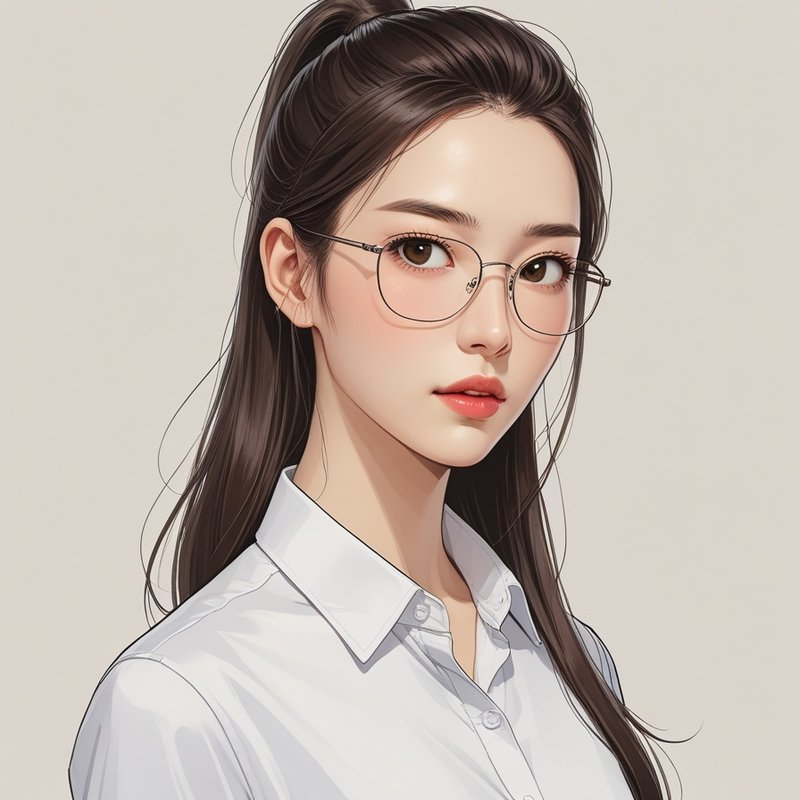
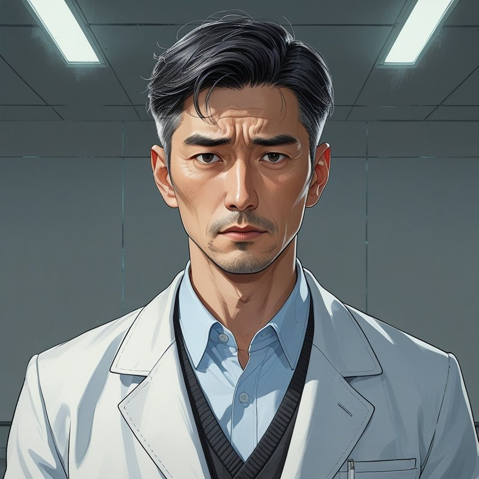
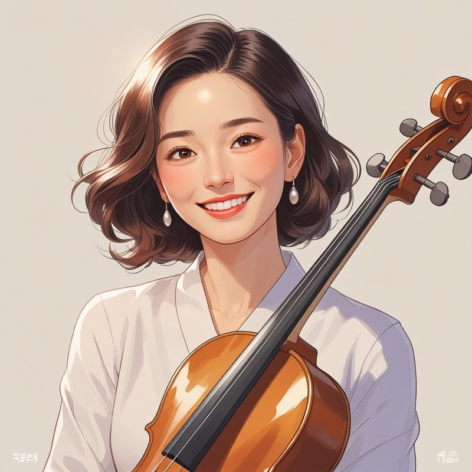
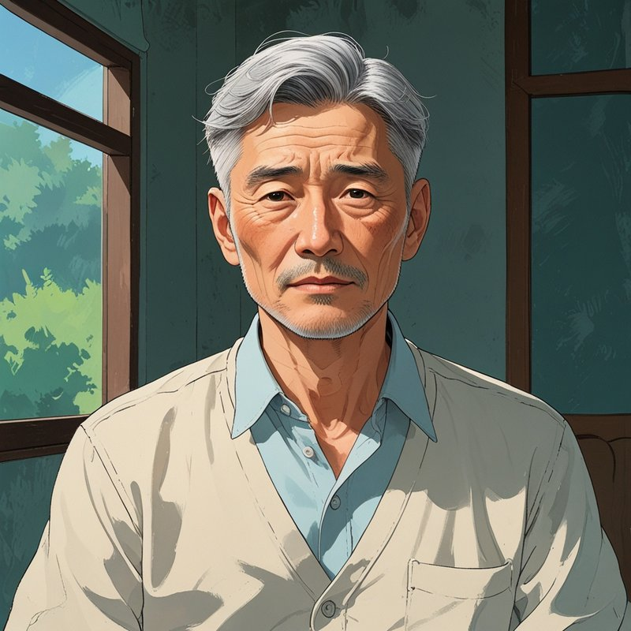

semi-realistic korean webtoon style, sharp clean linework, dramatic lighting and shadow, cinematic color grading, detailed digital illustration, webtoon character design
a stunning illustration of a Korean woman in her late 30s, sharp intelligent eyes, long straight dark brown hair tied in a high ponytail, forehead fully visible, hair parted and swept back, absolutely no bangs, no fringe, thin metal-frame glasses, wearing a tidy but relaxed white office blouse, calm and analytical expression with a faint hint of hidden playfulness, UX researcher, painterly digital illustration, soft cel-shading with realistic skin texture, dramatic directional lighting, korean webtoon art style
a stunning illustration of a Korean man in his mid-50s, wearing a white doctor's coat over a light blue collared shirt, worried intelligent expression, short dark hair with grey streaks, slight stubble, weathered and guilt-tinged eyes, deep worry lines on forehead, medical researcher, painterly digital illustration, soft cel-shading with realistic skin texture, dramatic directional lighting, korean webtoon art style
a stunning illustration of a Korean woman in her early 60s, warm bright smile, elegant yet casual artistic style, slightly wavy shoulder-length dark brown hair, cellist, cheerful and playful expression, graceful posture, painterly digital illustration, soft cel-shading with realistic skin texture, dramatic directional lighting, korean webtoon art style
a stunning illustration of a Korean man in his mid-to-late 60s, retired civil engineer, gentle and calm demeanor, simple comfortable clothing, slightly wrinkled kind face, thinning grey hair, composed and unshaken expression, painterly digital illustration, soft cel-shading with realistic skin texture, dramatic directional lighting, korean webtoon art stylewearing a fully buttoned collared shirt tucked into her pants, midriff and stomach fully covered, no crop top, no bare midriff, black compression suit collar and cuffs visible peeking out from under her shirt sleeves and collar, arms mostly covered, modest and practical clothing
Leonardo.Ai의 캐릭터 레퍼런스(Character Reference) 기능으로 위 기준 이미지를 얼굴 레퍼런스로 걸면 여러 컷에서 얼굴 일관성을 유지하기 쉽다. 화가 진행될수록(3화~) 채도를 낮추고 싶다면 desaturated color palette, muted tones를, 후반부(8~9화) 엔딩 톤에는 nearly monochrome, high contrast black and white with a single red accent color를 프롬프트 끝에 추가하면 된다.